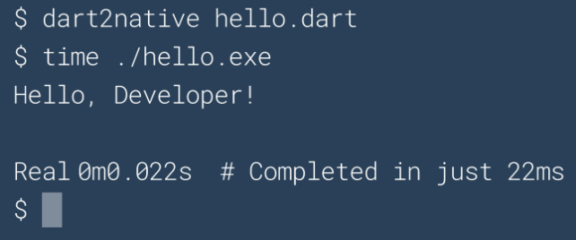

Este post vai ser um pouco diferente do que costumo escrever. Trata-se de um exercício de observação e questionamento das metodologias que nós – como indústria – temos adotado e praticado e como isso tem afetado a qualidade e eficiência do programas escritos na última década, no mínimo.
Gostaria de introduzir com este curto vídeo Grace Hopper para nos lembrar que computadores, desde os mais rudimentares, já operavam em escalas de velocidade muito altas. E ainda na década de 50, havia uma cultura de aproveitar cada nano segundo de processamento da CPU.
Por outro lado, de volta ao ano de 2020, temos grandes empresas de tecnologia se gabando de novas linguagens capazes de compilar e imprimir “Hello World” em um console em “apenas” 22ms como se vê nesse screenshot do site da linguagem Dart.

Se você chegou no planeta Terra neste exato minuto, pode não estar ciente de que há uma pandemia mundial e todo negócio que pode, está funcionando em regime de home office. Na Aquiris onde trabalho, não está sendo diferente. Estamos utilizando diversas soluções para manter a comunicação fluindo como Discord e Google Meeting.
Foi numa dessas reuniões via Google Meeting que a imagem de background da página chamou minha atenção. Mostrarei a tal imagem mais adiante. Na ocasião, fiz um post no twitter comentando a mesma imagem. Vou reproduzir aqui cerne do post em português para enfatizar meu argumento.
O problema da lâmpada em 1950
Considere o seguinte problema hipotético: um programa que acenda/apague uma lâmpada atravéz de um botão. Um programador da década de 60 ou 70 provavelmente escreveria algo assim:
typedef struct
{
...
bool isOn;
} Lamp;
void lamp_toggle_state(Lamp* lamp)
{
bool state = lamp->isOn;
lamp->isOn = !state;
}
Lamp lamp;
lamp_toggle_state(&lamp);
Você pode questionar algum ponto desta implementação. Mas antes de mais nada, o código resolve o problema e de maneira direta, linear e explícita e faz exatametne o que precisa fazer. Seu único compromisso é com o resultado que precisa produzir e com o hardware sobre o qual está executando.
Repare que não existem efeitos colaterais. Atribuir um valor a uma variável não resulta na invocação implícita de algum método obscuro, nem alocação dinâmica de memória de maneira sorrateira ou ainda a duplicação ou cópia de uma estrutura de dados que pode passar desapercebida.
Se este programa se manifestasse de maneira tangível no mundo real, poderia muito bem se parecer com a imagem abaixo.
O problema da lâmpada em 2020
Existe entretanto, uma tendência a atender normas e “boas práticas” que no geral não se baseiam em como um computador funciona, como as instruções são decodificadas e executadas, em qual a melhor forma de garantir que seus dados estejam organizados de maneira a otimizar o acesso ao cache etc. No fim, são quase simpatias ou dogmas técnicos
Assim sendo e ainda considerando o nosso problema hipotético inicial – acender e apagar a lâmpadacom um botão – a cultura e metodologias modernas certamente nos levariam a um design diferente. Começamos com a boa e velha técnica de considerar cada substantivo um “objeto”. Logo temos uma classe Lamp, button e por que não, uma classe LampSate para o estado da lâmpada em si.
A lâmpada provavelmente recebe uma referência ao botão via construtor. Como o botão pode estar sendo usado por outras lâmpadas passamos um std::shared_pointer<Button> para o Construtor de Lamp. Pra evitar alocar uma instância temporária de Button, construímos Lamp enquanto construímos Button inline via std::make_shared<Button> e assim seguimos pensando em outros aspectos que são alheios a solução do problema em si e alternamos o foco para a linguagem de programação e começamos a escrever código para atender outras “necessidades” como RAII, Exception Safety, Const correctnes, memory ownership, SOLID principles, e Deus me livre não implementar isso via PIMPL idiom. Parece que precisamos usar todas as ferramentas da caixa para realizar qualquer trabalho que seja.
Ainda sim, alguns Design Patterns e Manifest Files depois, e voilà! Temos nosso software pronto.
Software que caso se materializasse como algo tangível – de maneira similar ao exemplo anterior – certamente se pareceria com a imagem abaixo.

Como eu disse no início deste post, a imagem acima é a tal imagem de background do Google Meeting que me chamou a atenção, pois imediatamente associei aos valores e dogmas que regem o desenvolvimento “moderno” de software. Muitas coisas são colocadas como indispensáveis e corretas e se antepõem a razão de ser do software em si: resolver o problema de maneira eficiente.
É evidente que recorro ao exagero nestes exemplos para exprimir meu ponto de vista. Mas a grande questão que deixo para reflexão é: o quanto de exagero há de fato nesta imagem?
Questiono quantos nano segundos – nós como indústria – estamos desperdiçando, quantas linhas de código a mais estamos escrevendo e mantendo, e quantas camadas de complexidade a mais estamos adicionando e que benefícios estamos de fato colhendo desta forma de desenvolver software ?
A degradação da cultura da programação
Minha opinião pessoal é que a cultura de programação não tem mais parâmetros ou boas referências de como escrever bons softwares. Muitos não fazem ideia de quão rápido é uma CPU moderna e muito menos como organizar os dados na memória de maneira que a CPU possa operar no máximo de sua eficiência e velocidade. Parece que estamos num tempo onde ninguém mais cria nada, apenas junta partes prontas. E se todos os softwares usam as mesmas bibliotecas, todos eles sofrem dos mesmos bugs e vulnerabilidades quando descobertas. Todos são obrigados a seguir os mesmos designs, pois afinal, usam mesmas APIs e aos poucos vamos desaprendendo a fazer coisas básicas. No fim, temos cada vez mais programadores e cada vez menos conhecimento sobre computadores
Complexidade de distribuição de software
Acredito que não só desenvolvemos software de maneira desnecessariamente complexa, mas que essa complexidade também se estende a forma como distribuímos software. Tudo tem um instalador, centenas de arquivos, entradas no registro, dezenas de dlls etc. Raramente, estas escolhas de distribuição se justificam.
Compre um teclado moderno e ele te pedirá pra instalar dois ou três programas distintos. (Estou falando com você Razer. Por algum mistério o software que controla as macros não pode ser o mesmo que controla o brilho das teclas ou sei lá o que. Quando e por que paramos de distribuir software como um simples arquivo executável?
É possível sim fazer melhor que isso. Um bom exemplo é o RemedyBG, um debuger desenvolvido por UM ÚNICO INDIVÍDUO distribuído num zip contendo um executável e um readme.txt. Outro bom exemplo são as STB libraries, bibliotecas absolutamente bem escritas para os mais devidos fins, distribuidas como um único arquivo .h. Nada de instaladores pra SDKs e outras distrações. Estes bons exemplos, entretanto, são cada vez mais raros.
Produtividade x Qualidade
Por exemplo, considere que hipoteticamente a Epic Games compre a Unity e por uma estratégia de negócio a retire do mercado para favorecer a sua própria engine, a Unreal. Quantos desenvolvedores Unity ainda serão capazes de produzir um PONG no dia seguinte ? Apesar de ser somente uma expeculação, gostaria de trazer a memória alguns exemplos interessantes como Adobe Flash e por que não o Microsoft XNA, onde tecnologias “sumiram” da noite pro dia.
Você pode argumentar que nem sempre há tempo ou vale a pena escrever uma engine do zero ou renderizar as próprias fontes TTF e que é mais simples usar alguma biblioteca que já faça isso. Em muitos casos, isso é verdade. Mas há um preço nisso. No início de um projeto sempre queremos resultado. No fim, sempre precisamos de controle. É quando descobrimos que a biblioteca X aloca memória quando não deveria, e que o framework Y tem um bug que não tem data para ser solucionado pelo desenvolvedor. E essas escolhas terminam chegando até o jogador ou usuário final na forma de uma experiência ruim. Requests lentos, drop no frame rate etc. E apesar disso, continuamos repetindo este comportamento projeto após projeto e dizendo que não há tempo pra fazer algo que realmente atenda as necessidades específicas
O que quero dizer é que paramos de querer entender as tecnologias com as quais trabalhamos e ficamos dependentes bibliotecas, engines e ferramentas a ponto de não sermos mais capazes de produzir algo semelhante ou até melhor. Este comportamento, quando observado na indústria como um todo é sem dúvida um sinal de retrocesso.
(Re)Inventando a roda
Como eu disse há pouco, talvez por falta de boas referências, ou por que muitas dessas práticas são ensinadas nas faculdades – apesar de não se sustentarem diante dos problemas do mundo real – continuamos produzindo softwares lentos, pesados, difíceis de manter, complexos de distribuir e reutilizando péssimas bibliotecas de novo e de novo. Me parece imprescindível voltarmos a ser capazes de construir coisas novas e por nós mesmos quando necessário. Nossos próprios debuggers, editores de texto, game engines, linguagens de programação e sistemas operacionais não só pra termos novos e melhores softwares mas para manter vivo o conhecimento de como as coisas funcionam. Sempre que falo disso, alguém me pergunta “por que reinventar a roda ?“.
Esse pensamento é sintomático da degradação da cultura da programação que eu havia comentado. Continuamos a utilizar bibliotecas que dependem de bibliotecas empilhando abstrações sobre abstrações, e estas sobre um hardware que cada vez entendemos menos e ninguém parece perceber que 22ms para compilar e imprimir Hello World no console é uma péssima métrica com os computadores que temos em 2020!
Agora de volta a pergunta da roda, eu retruco, o que exatamente seria a roda no caso da indústria de jogos por exemplo? A engine do DOOM foi um marco para a época. Se considerássemos isso como uma roda, não teríamos Unreal, Unity3D, GoDot e afins. Se a rasterização fosse a roda não teríamos Raytracing. Mas se todas estas “novas” coisas estão surgindo, como posso afirmar que a indústria está em retrocesso ?
Simples! Tudo isso tem sido possível graças a avanços de hardware. Raytracing, machine learning e outras maravilhas modernas da computação foram concebidos há décadas atrás e atualmente são possíveis graças aos avanços de hardware. A má notícia, é que, ao contrário do que acontecia há décadas atrás, não há mais uma projeção de grandes aumentos de velocidade para as CPUs. O que nos traz de volta a introdução deste post com o vídeo da Grace Hopper nos lembrando que o software precisa utilizar da melhor maneira os recursos do hardware e cada nano segundo conta.
Salvando a indústria, o mundo e a princesa no castelo
Não tenho uma conclusão ideal para este post. Não tenho uma solução para os problemas que apontei e muita gente de fato nem enxerga esses problemas. Mas deixo abaixo minhas considerações e observações.
Meu entendimento é que – como indústria – precisamos voltar a experimentar e a construir coisas do zero novamente, ou perderemos de vez o conhecimento de como fazer certas coisas. Também acredito ser necessário fomentar a mentalidade de escrever código que simplesmente resolva o problema de maneira eficiente. E que isso raramente requer usar todas as ferramentas da caixa ao mesmo tempo. Pois quanto mais código adicionamos fora do escopo do problema, muitas vezes simplesmente para para atender uma “boa prática” ou por razões meramente idiomáticas, mais adicionamos camadas de complexidade que apenas encarecem e degradam a qualidade do software na maioria dos casos
Concluindo...
Do mesmo modo, não é preciso ser um gênio da computação para observar que algumas coisas estão certas e outras erradas, principalmente depois de mais de 20 anos escrevendo todo tipo de software, desde telecomunicação a games. Ao longo desse tempo, para mim é nitidamente visível a degradação tanto da qualidade geral dos softwares quanto da cultura da programação em si.
Minha intenção com este post, de maneira nenhuma é me por num pedestal como o grande conhecedor das artes arcanas e élficas da programação gabaritado a apontar o que está certo ou errado na indústria como um todo. Mas você não precisa ser um chefe de cozinha nem ser versado em gastronomia para perceber que um prato tem um sabor etranho, uma aparncia questionável ou algo sugere que foi feito sem muito cuidado ou atenção.